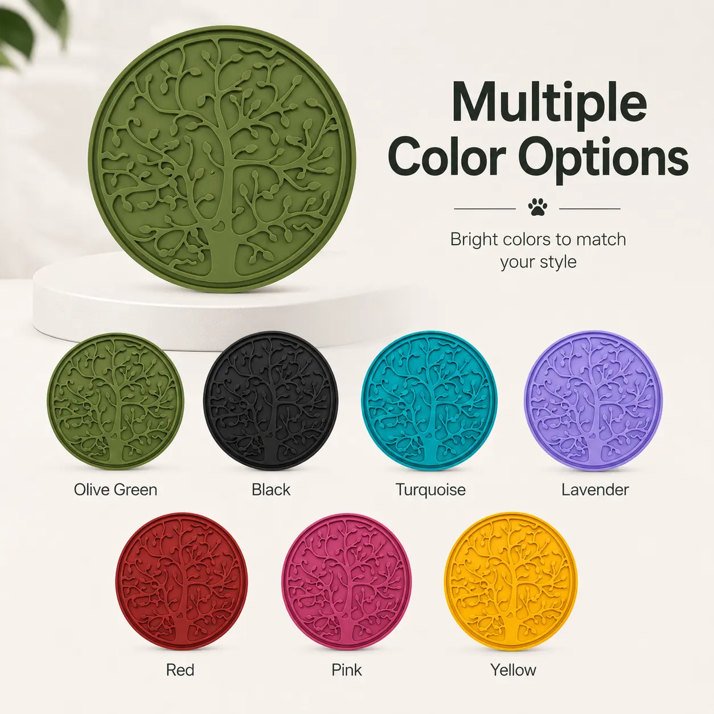
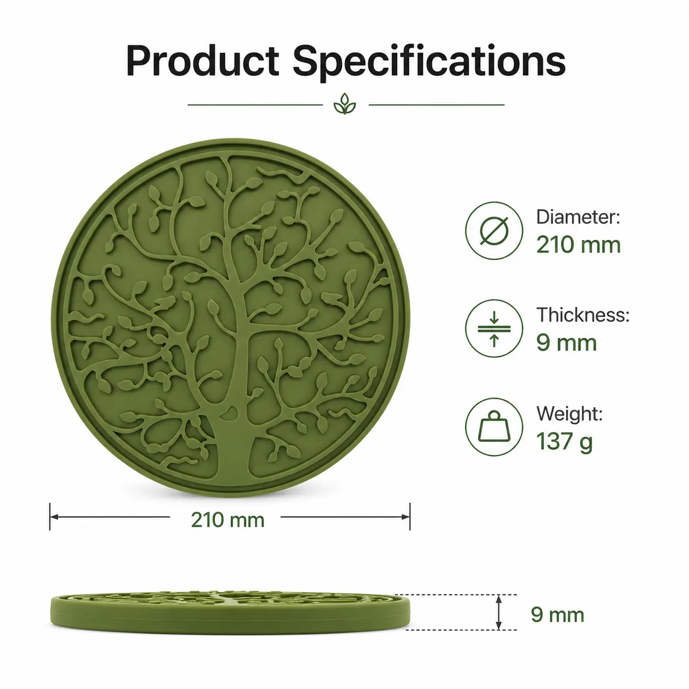
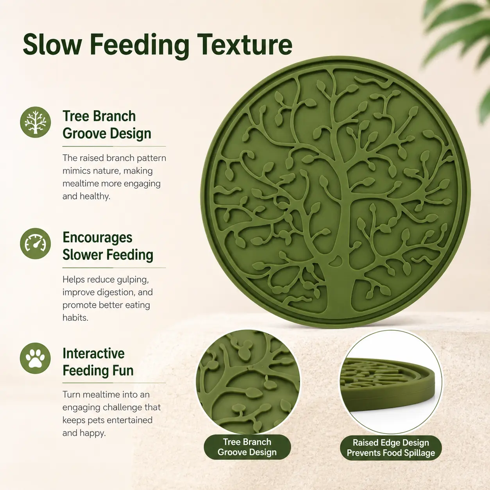
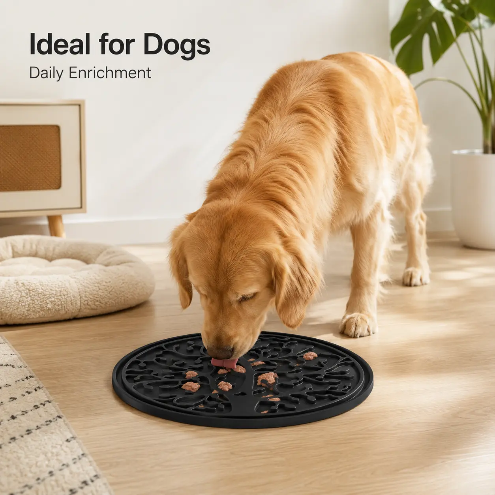
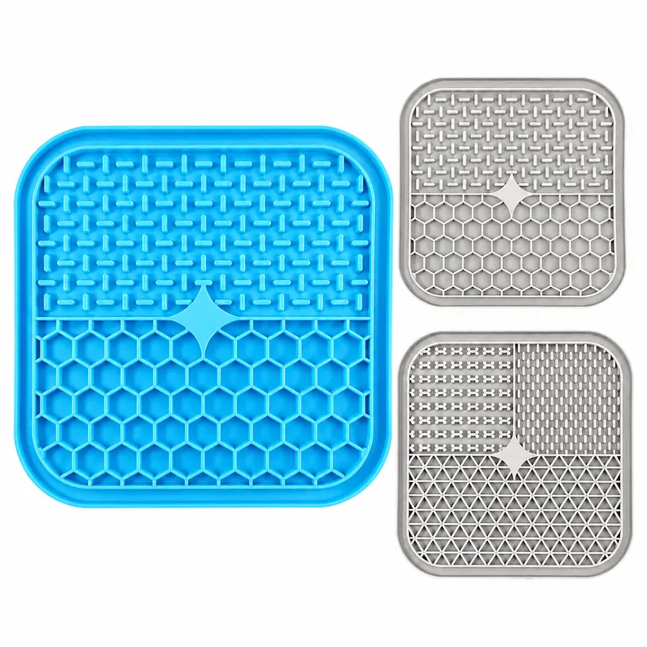

Multi-Zone Dog Lick Mat with Suction Base
304×204mm · 7 colors · Suction base · SKU LM-018
View Product




Available Colors
Custom colors available for OEM orders
| Material | Silicone (LFGB- and FDA-tested food-grade — test reports available on request) |
|---|---|
| Material reports | LFGB / FDA / REACH — silicone parts; reports on request |
| Dimensions | Ø 210mm × 9mm thick |
| Weight | Approx. 137g |
| Colors | Olive Green, Black, Turquoise, Lavender, Red, Pink, Yellow |
| MOQ | From 10 pcs (stock colours) · custom colour or logo quoted on request |
| Sample Lead Time | Approx. 7 days |
| Production Lead Time | 15–25 days after sample approval |
| Customization | Logo, color, packaging available |
| SKU | QD-CP1050 |
The raised tree-branch and leaf pattern creates an uneven surface that naturally slows down eating. Dogs and cats work around the ridges to reach their food, which sets a slower eating pace. Feeding time varies with the pet, the food and the portion size. Suitable for dogs and cats of all sizes — from small breeds to large dogs.
Made from food-contact safe silicone. The material is non-toxic, odorless and free from BPA, PVC and phthalates. Silicone does not absorb food odors or bacteria, making it more hygienic than plastic alternatives. This product is made from LFGB- and FDA-tested food-grade silicone; test reports are available before order placement.
Dishwasher safe — top rack recommended. Can also be rinsed under running water or wiped clean. The smooth silicone surface does not trap food residue in hard-to-clean areas, which is a common complaint with plastic feeders.
Available for wholesale and private label programs. Customization options include:
Yes. The mat works well for both dogs and cats. The pattern depth and ridge spacing is suitable for most breed sizes.
The raised pattern works best with wet food, peanut butter, yogurt, purees and similar spreadable foods. Dry kibble can also be used but may fall off more easily due to the round shape.
Yes. Sample lead time is approximately 7 days. Contact us via the form or WhatsApp to arrange a sample.
Yes. We can prepare FBA-compliant packaging including FNSKU labeling and ship directly to Amazon fulfillment centers in the US, UK and EU.
304×204mm · 7 colors · Suction base · SKU LM-018
View Product
S 15.5 cm · L 20 cm · 6 colors · suction base · SKU LM-004
View Product
20 × 20 cm · 64 suction cups · Grey / Blue · SKU LM-005
View Product